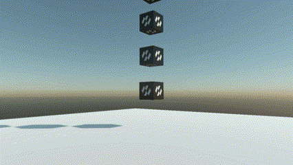

Using Physics Bodies

A walkthrough that builds a working physics scene from nothing: a floor, a stack of crates to knock over, a platform that carries things, and a way to shoot at all of it. Every step is code you can paste into a Scene.
1. Register the world
Nothing physical happens without a PhysicsManager. Add one in RegisterManagers:
public class MyScene : Scene
{
public override void RegisterManagers()
{
base.RegisterManagers();
this.Managers.AddManager(new Evergine.Framework.Physics.PhysicsManager());
}
}
2. Give it a floor
A floor is a StaticBody. Static bodies never collide with each other, so a level built from a hundred of them is nearly free.
protected override void CreateScene()
{
Material material = this.Managers.AssetSceneManager.Load<Material>(EvergineContent.Materials.DefaultMaterial);
Entity floor = new Entity("floor")
.AddComponent(new Transform3D() { Position = new Vector3(0f, -0.2f, 0f), Scale = new Vector3(40f, 0.4f, 40f) })
.AddComponent(new MaterialComponent() { Material = material })
.AddComponent(new CubeMesh() { Size = 1f })
.AddComponent(new MeshRenderer())
.AddComponent(new StaticBody() { Friction = 0.6f })
.AddComponent(new BoxCollider());
this.Managers.EntityManager.Add(floor);
}
Tip
The BoxCollider needs no size here. Left at its default it takes the entity's scale, so scaling the entity scales the collider with the mesh. A collider on a loaded model can instead size itself from the model's bounds with UseModelBounds; see Colliders.
3. Stack some crates
private void CreateStack(Material material, Vector3 origin, int count)
{
for (int i = 0; i < count; i++)
{
// A hair over one unit apart. Stacked at exactly their own height the boxes start the
// simulation already touching, and the solver spends its first step pushing them apart.
Entity crate = new Entity($"crate{i}")
.AddComponent(new Transform3D() { Position = origin + (Vector3.UnitY * (0.5f + (i * 1.02f))) })
.AddComponent(new MaterialComponent() { Material = material })
.AddComponent(new CubeMesh() { Size = 1f })
.AddComponent(new MeshRenderer())
.AddComponent(new RigidBody() { Restitution = 0.05f })
.AddComponent(new BoxCollider());
this.Managers.EntityManager.Add(crate);
}
}
A RigidBody is dynamic unless IsKinematic says otherwise, so nothing has to be said for a crate to fall.
4. Add a platform that carries them
A kinematic body is driven by your code and pushes everything else out of the way. The one rule is that it has to be moved with MoveTo:
public class MovingPlatform : Behavior
{
[BindComponent]
private RigidBody body = null;
[BindComponent]
private Transform3D transform = null;
private Vector3 origin;
private float elapsed;
public Vector3 Travel { get; set; } = new Vector3(4f, 0f, 0f);
public float Period { get; set; } = 6f;
protected override bool OnAttached()
{
if (!base.OnAttached())
{
return false;
}
this.origin = this.transform.Position;
return true;
}
protected override void Update(TimeSpan gameTime)
{
// Capped, because a hitch must not become a teleport: the first frame of a scene can run to a
// second while content finishes loading, and advancing the whole of it in one step asks MoveTo
// for the velocity needed to cross that gap now, which flings anything standing on the platform.
this.elapsed += Math.Min((float)gameTime.TotalSeconds, 1f / 30f);
float phase = (float)Math.Sin(this.elapsed * MathHelper.TwoPi / this.Period);
this.body.MoveTo(this.origin + (this.Travel * phase), this.transform.Orientation);
}
}
Give the platform entity a RigidBody with IsKinematic = true, a BoxCollider, and this behavior.
Important
Writing transform.Position instead of calling MoveTo teleports the body every step. It ends up in the right place, but with no velocity: it passes through whatever was in its way and leaves behind whatever was standing on it.
5. Shoot at it
Firing a body into a live world exercises the interesting part of the system (deferred creation, the broad phase taking a new body mid-simulation) and it is the quickest way to see whether the scene behaves.
public class BallLauncher : Behavior
{
private Material material;
public float Speed { get; set; } = 18f;
protected override void Update(TimeSpan gameTime)
{
MouseDispatcher mouse = this.Managers.RenderManager.ActiveCamera3D?.Display?.MouseDispatcher;
if (mouse == null || mouse.ReadButtonState(MouseButtons.Left) != ButtonState.Pressing)
{
return;
}
Camera3D camera = this.Managers.RenderManager.ActiveCamera3D;
Vector3 direction = Vector3.Normalize(camera.Transform.WorldTransform.Forward);
this.material ??= this.Managers.AssetSceneManager.Load<Material>(EvergineContent.Materials.DefaultMaterial);
Entity shot = new Entity("shot")
.AddComponent(new Transform3D() { Position = camera.Transform.Position + (direction * 1.2f) })
.AddComponent(new MaterialComponent() { Material = this.material })
.AddComponent(new SphereMesh() { Diameter = 0.4f })
.AddComponent(new MeshRenderer())
// The velocity is set before the entity joins the scene, which is what makes it stick: the
// manager creates bodies deferred, so a velocity assigned now goes into the body's creation
// settings instead of having to wait a frame to be applied.
.AddComponent(new RigidBody()
{
Restitution = 0.3f,
LinearVelocity = direction * this.Speed,
})
.AddComponent(new SphereCollider() { Radius = 0.2f });
this.Managers.EntityManager.Add(shot);
}
}
6. React to the impacts
this.crateBody.CollisionStarted += (sender, info) =>
{
// info.OtherEntity is what hit us, info.Point is where, info.Normal is from which side.
this.PlayThud(info.Point);
};
See Collisions for the full contact information, and Sensors for bodies that report overlaps without stopping anything.
7. Check it with debug rendering
When a body behaves oddly the first question is always whether its shape is what you think it is. Turn the wireframe on and look:
// The render manager's debug lines are the switch; the physics flags choose what is drawn.
this.Managers.RenderManager.DebugLines = true;
this.Managers.FindManager<PhysicsManager>().DebugFlags = PhysicsDebugFlags.Colliders;
The debug drawing shows the shapes as the solver has them, convex radius applied and compound shapes assembled, so anything that disagrees with the mesh is a real difference and not a drawing artefact. See Debug Rendering.